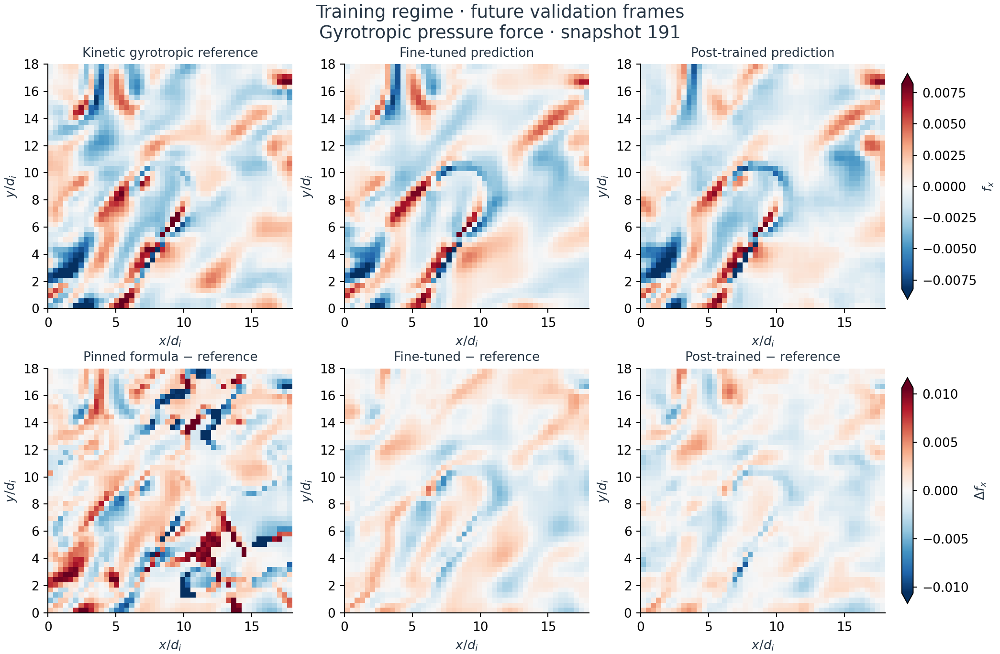
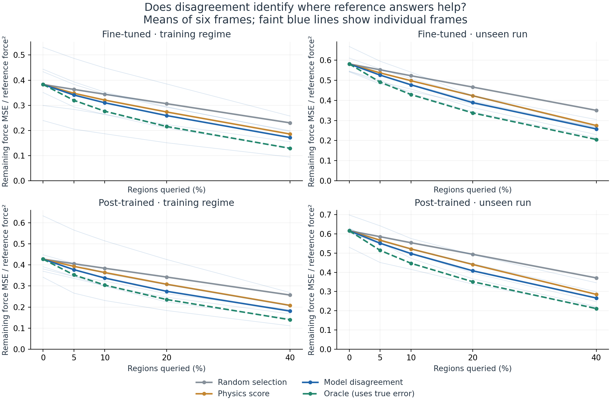
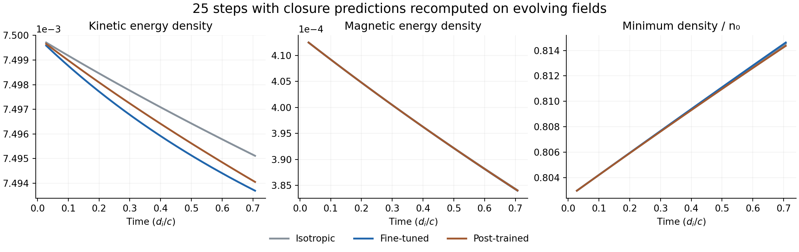

New experiment · 14 October 2026 · Rusty job 7243740
Do the learned corrections produce useful forces?
Yes, in this offline test. The learned gyrotropic stress gives more accurate pressure forces, and model disagreement helps choose where to request a reference answer.
Across six validation frames per run, the fine-tuned model reduces force mean-squared error by 62% in the training regime and 42% in the unseen run, relative to omitting the anisotropic correction. This tests the force from the reconstructed gyrotropic stress, not the complete kinetic force.
Prefer to watch it?
Play the particle reference, neural prediction and error together through the saved snapshots. Start with the missing pressure force; switch to the pressure imbalance behind it.
The spatial force—and where it is wrong
The upper row compares the same force component in the kinetic-moment reference and the two learned predictions. The lower row shows prediction minus reference; white means a small error. All panels in each row share one color scale.

Spend reference queries where they help most
Each method gets the same number of 8³-cell regions. Blue selects regions where the fine-tuned and post-trained force predictions disagree. Orange uses a fixed physics score; gray selects at random. The dashed oracle knows the true error and is an upper benchmark for selection quality.

What a query means here: replace the selected region’s predicted force with its reference force. This measures offline selection value. It does not yet evolve a kinetic patch, enforce conservative patch interfaces, or measure computational speedup.
Measured errors, without changing the metric
Equal-weight means across frames. The force metric is ⟨|f̂ − f|²⟩ / ⟨|f|²⟩; zero is perfect and 1 is the isotropic baseline. These are not anisotropy R² scores.
| Correction | Training-regime force error | Unseen-run force error |
|---|---|---|
| Isotropic (no anisotropic force) | 1.000 | 1.000 |
| Fitted instability-pinned formula | 1.722 | 2.388 |
| Fine-tuned | 0.383 | 0.582 |
| Post-trained | 0.428 | 0.616 |
Protocol and limits
Frames 181, 184, 187, 191, 195 and 199 from each run. These development-validation frames were previously used for model selection; neighboring frames are correlated. The unseen run was excluded from training but is not a new, untouched benchmark.
Predicted anisotropy is converted to parallel and perpendicular pressure while preserving the supplied scalar pressure. Density, scalar temperature, magnetic field and velocity come from each supplied reference frame. Both predictions and reference use identical derivatives, grid spacing, an 8-cell edge exclusion and a shared low-field treatment. This reconstructs gyrotropic stress from scalar moments; it does not validate the full nongyrotropic kinetic tensor or a fully filtered pressure tensor.
The physics router uses predicted anisotropy magnitude times isotropic beta. Scores are fixed, with no router fitting. Disagreement is between two model variants, not independent ensemble members. The fitted pinned formula is one baseline, not the strongest possible fitted closure.
The correction now runs inside evolving fluid
The 25-step fluid probe completed on Rusty CPU job 7244710. It compares isotropic, fine-tuned and post-trained closures, recomputing predictions from the evolving state without supplying intermediate reference fields.
This first integration test uses a smoothly periodicized PIC crop and unforced isothermal MHD with gyrotropic ion stress. It checks positivity, mass and momentum conservation, and magnetic divergence. It does not yet optimize a closure through a matched PIC trajectory.

This is an integration result, not an accuracy result. The time interval is short, the boundary-periodicized initial condition is modified, and no kinetic target trajectory is used. The next experiment is optimization through evolution with matched thermodynamics and temporal targets.
Figures generated from completed Rusty outputs. Numerical summary. Click any figure for full resolution.